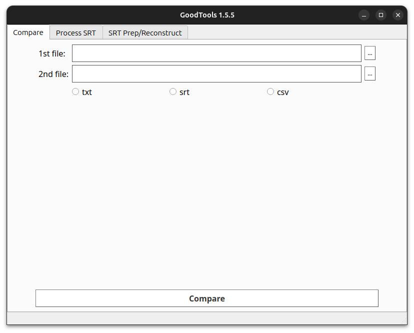
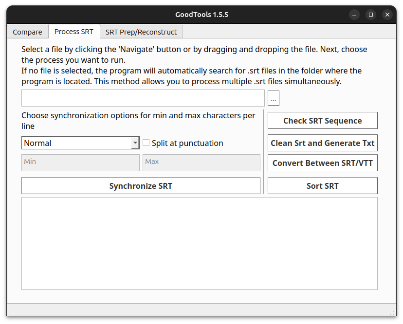
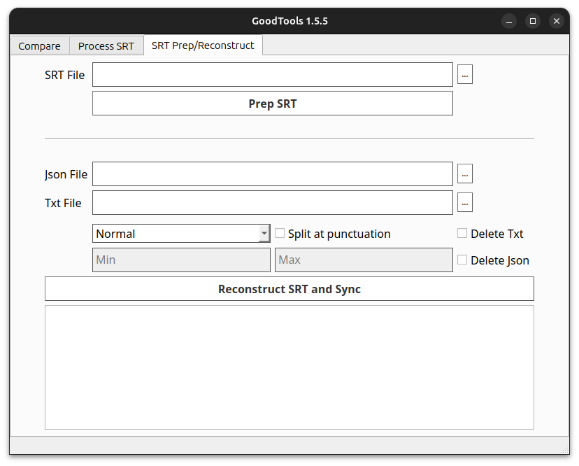

Overview
This application provides tools for processing SRT files, designed especially for professionals translating videos. It offers multiple functionalities to streamline handling subtitles and ensure optimal workflows.
Compare Tab

In this tab, you can compare two files of the same type (.txt, .srt, or .csv).
How to Use:
- Input Files: Drag and drop the files into the input fields or use the "Navigate" button to select files.
- Compare Files: Click the "Compare" button to generate an HTML file.
- The HTML file will be saved in the same directory where the program is installed.
- Open the HTML file in your browser to view the comparison results.
Features:
- Color Coding:
- Green: Text added.
- Red: Text removed.
- Yellow: Text edited.
Process SRT Tab

This tab offers multiple tools to process .srt files.
How to Use:
- Input Files:
- Drag and drop files or use the "Navigate" button to select a file.
- Alternatively, if no file is selected, the program will automatically search the directory where it is saved for
.srt files. If you press the "Convert Between SRT/VTT" button, it will also detect .vtt files.
- Output Files:
- If files are manually selected, you’ll be prompted to choose a save location.
- If files are detected automatically, the output will be saved in the same directory as the program.
Features:
- Sort SRT: Sorts the timestamps of
.srt files if they are out of order.
- Convert Between SRT/VTT: Converts files between
.srt and .vtt formats.
- Clean SRT and Generate TXT: Removes timestamps, block numbers, and empty lines from
.srt files and saves the cleaned content as a .txt file.
- Check SRT Sequence: Checks
.srt files for common errors:
- Timing errors within the same timestamp.
- Timing errors between two timestamps.
- Block numbering errors.
- Extra spaces after block numbers.
- Extra empty rows.
- Timestamp format errors.
- Synchronize SRT: Adjusts the text in
.srt blocks to fit within specified character limits:
- Normal: 42 max characters per line, 30 min characters per line.
- Short: 30 max characters per line, 20 min characters per line.
- Custom: Set your own min/max character limits using the Min and Max fields. After you press
Synchronize SRT the values you chose will be saved in assets/config.json and if you leave the fields empty the program will read the values from the config file.
- Optionally, enable "Split at punctuation" to prioritize splitting lines at punctuation marks.
SRT Prep/Reconstruction Tab

This tab is designed to facilitate translation workflows using tools like ChatGPT, DeepL, or other AI-powered services.
How to Use:
- Prepare for Translation:
- Input an
.srt file and click the "Prep SRT" button.
- The program generates:
- A
.json file containing the original structure.
- A
.txt file split into chunks of up to 5000 characters (split at sentence boundaries). The .txt file contains only text, without timestamps or block numbers, preserving context for AI translation tools.
- Reconstruct SRT:
- After translating the
.txt file, input the translated file and the .json file.
- Click "Reconstruct SRT and Sync" to:
- Convert the translated text back into
.srt format using the original structure.
- Apply synchronization settings (see synchronization options).
By streamlining tasks such as subtitle comparison, cleaning, and synchronization, this application ensures a more efficient subtitle processing workflow.